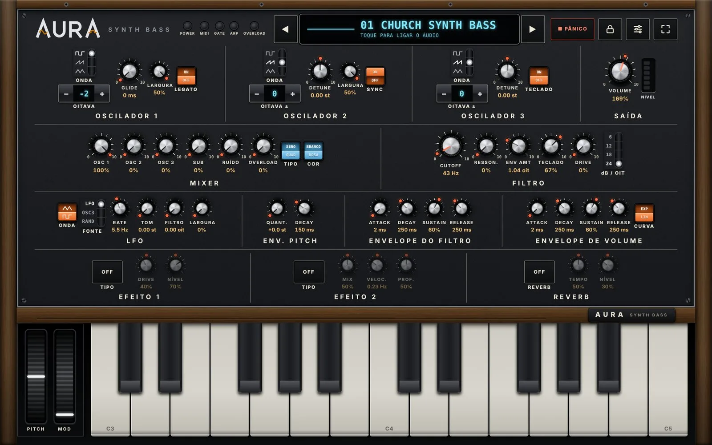
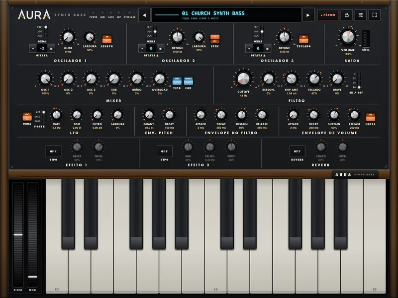
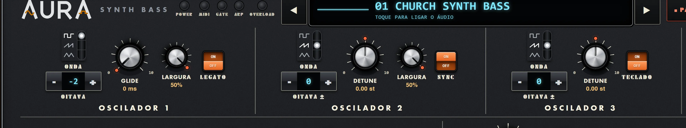
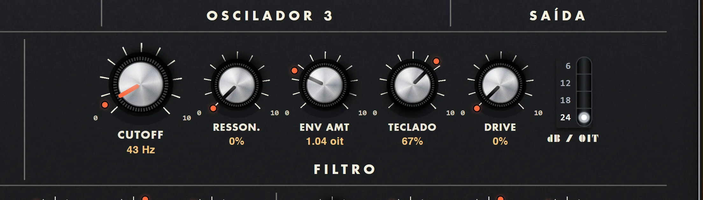
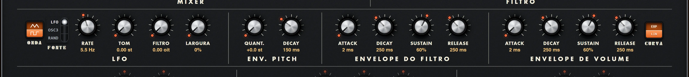
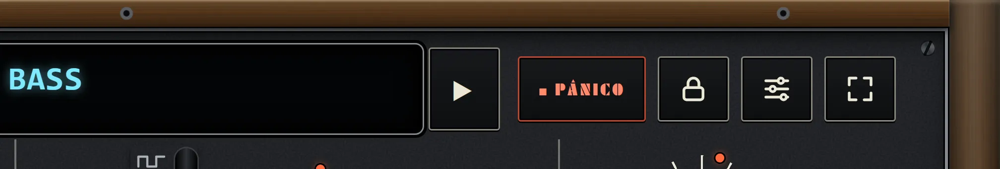
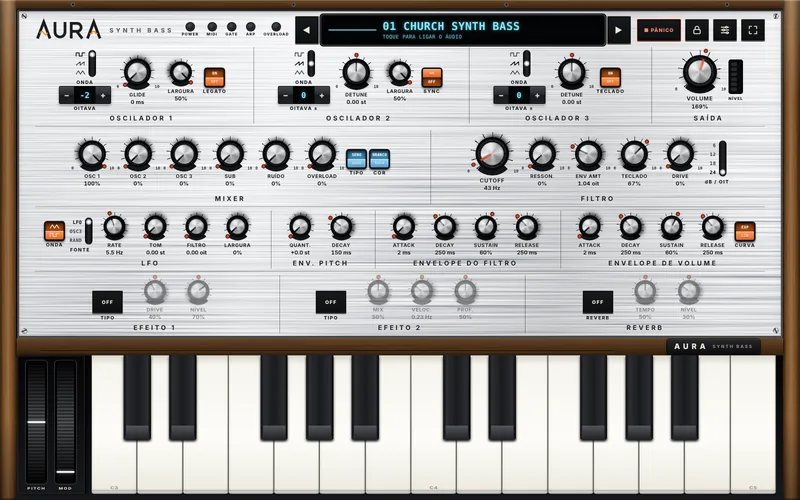
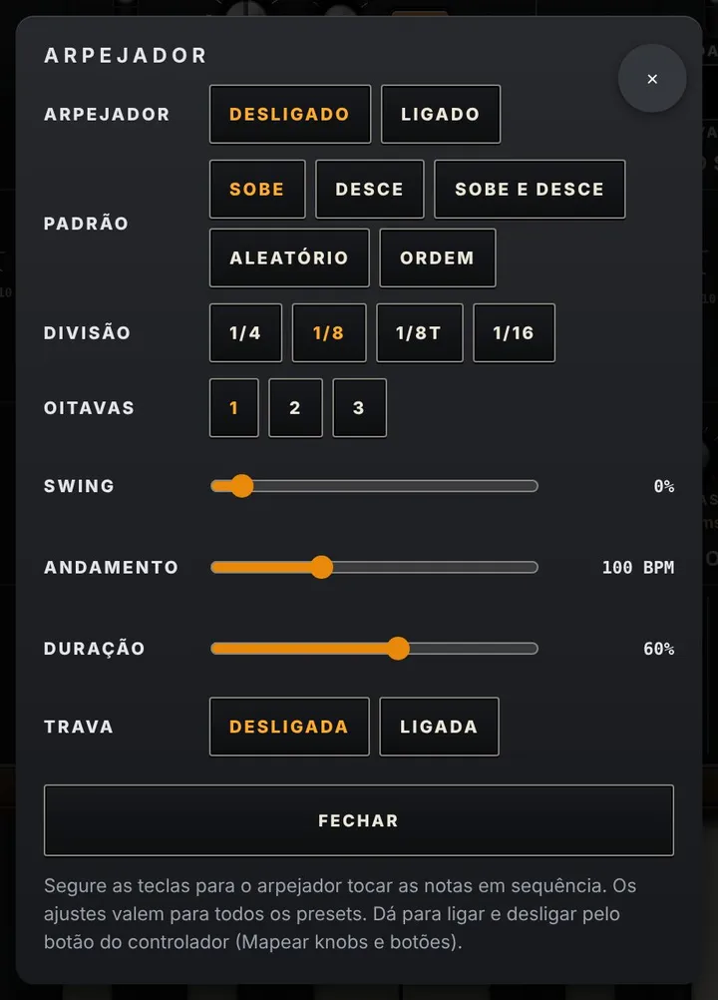
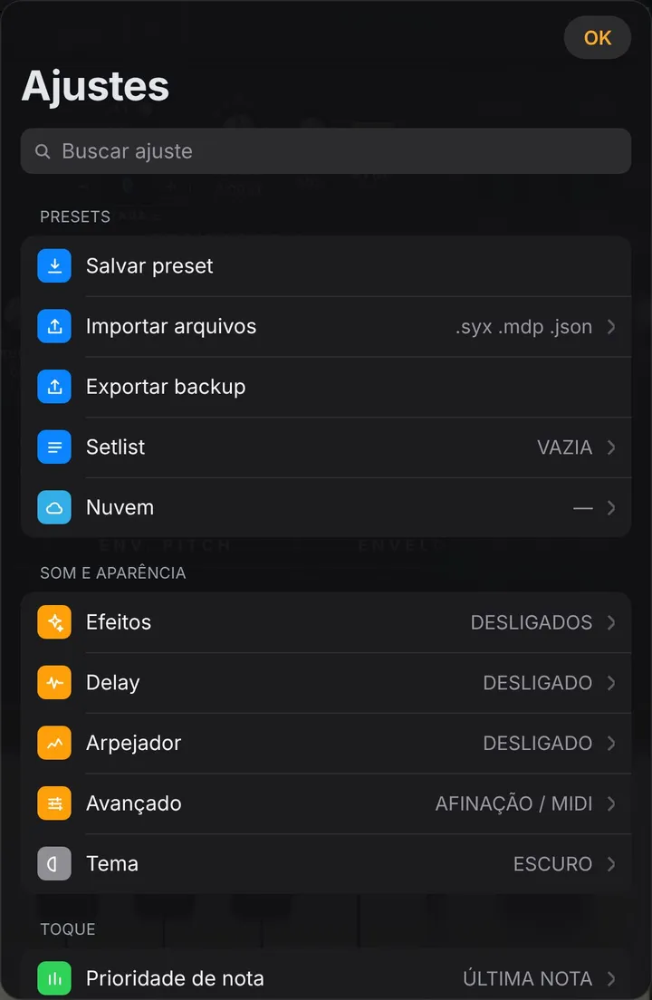

24
timbres de fábrica, prontos no visor
Sub Soft · Sub 808 · Drive Heavy · Drive Stage 2 · Octave Wild · Funk Slap · Pop · Rock · Lead Mono · Pluck Warm · Chorus Wide
AURA Synth Bass
Um sintetizador de baixo para o palco e o estúdio. No Windows e no Mac, como programa ou plugin.






Por dentro
01 · Osciladores
Onda, oitava, detune, sub e ruído, cada um no seu knob.
02 · Filtro 24 dB
Cutoff, ressonância e drive em um filtro de 24 dB.
03 · Movimento
LFO, envelope de pitch, de filtro e de volume.
04 · Palco
Botão de pânico, cadeado de tela e tela cheia, sempre no alto do painel.
05 · MIDI
USB ou Bluetooth. Qualquer botão em qualquer knob, em segundos.
Liga, escolhe o timbre e toca. Sem curva de aprendizado entre você e o som.
Acabamento


Os dois têm exatamente as mesmas funções. Só a cor muda.
24
Sub Soft · Sub 808 · Drive Heavy · Drive Stage 2 · Octave Wild · Funk Slap · Pop · Rock · Lead Mono · Pluck Warm · Chorus Wide
Padrões, divisão, swing e trava, no andamento da música.

Favoritos, backup e Program Change. Seus sons sincronizados entre aparelhos.

Ilustrado, do zero ao palco, com receitas de som.
Ler o manualSem instalar
Abra o AURA no navegador por 5 minutos. Use fones e, se tiver, um teclado MIDI.
Preço
Licença completa. Tudo liberado.
Sem cartão. Compre só se gostar.
Todos os recursos liberados. Sem cartão.
O instalador é para Windows e Mac. Neste aparelho, você pode .
Ligando o AURA
Toque em Deitar ou gire o celular para tocar com mais teclas